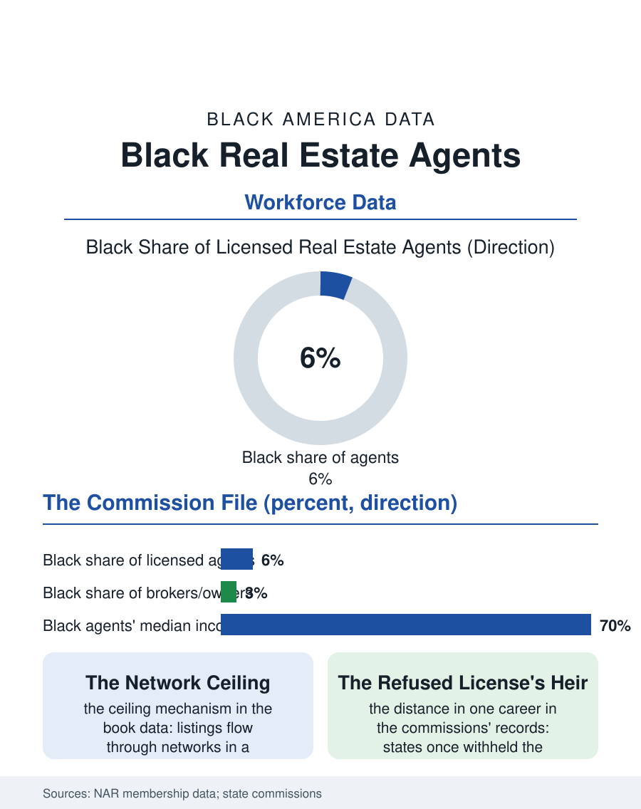

Black Employment
The Sign in the Yard: Black Real Estate Agents
Six percent of agents, books capped by the network's geography, in the trade that was once licensed against them. The agents file.

Real estate brokerage is the sales trade whose demographics the licensing data track precisely: Black agents constitute roughly six percent of the nation's realtors against thirteen percent of the population, concentrated in the community markets their firms have served since the fair housing era, facing a commission economy whose networks allocate the listings that allocate the income. This article reads the agents file.
Licenses and Listings
The licensing data give the file its base: the state commissions' records and the national association's membership data place the Black share of agents in the mid single digits, rising slowly in the recent membership cohorts, with the brokerage tier, the owners of the firms, thinner still, the Black-owned brokerage of the business file being the agent file's entrepreneurial exit. The income distribution inside the trade is the file's center: real estate pays on the listing's side of the sign, the agent who holds the seller's contract earning from the inventory the market supplies, and the listing supply runs through the networks, the past clients, the sphere of influence of the prospecting literature, whose racial composition in a segregated housing market reproduces the market's own lines, so that the Black agent's book is built disproportionately in the community's market, its price points and its turnover rates setting the commission income's ceiling below the suburban book's. The fair housing file supplies the legal frame: the agent is the housing market's licensed gatekeeper, the steering prohibition's addressee, and the testing programs that audit the gate continue to find the differential treatment the paired testers record, a finding the profession's own fair housing training now teaches against with the industry's name on the curriculum.
Teams, Platforms, and the New Gates
The trade's structure has reorganized around the agent: the team model, the rainmaker and the licensed staff, concentrates the listings and the brand in the team's head, and the platform economy, the portal leads sold by the click, the referral networks taking their cut of the commission, reintermediates the agent's client acquisition at a toll the individual book must bear. The Black agent's position in the reorganization follows the capital pattern: the teams require the marketing budget and the staff payroll the established book finances, the portal leads price by the ZIP code's values in the pattern that taxes the community-market agent twice, leads costing against the lower price points the book serves. The appraisal and lending files adjoin: the agent's transactions run through the appraiser's valuation and the lender's underwriting, whose Black differentials the housing files document, so that the Black agent's deals carry the system's friction in their closing rates, a tax on the book the commission data eventually show. The profession's diversity initiatives, the association's mentorship and the brokerages' recruiting programs, post their results in the membership cohorts' slow climb, the file's trend line, while the luxury and commercial tiers, the trade's commanding heights, remain the least integrated in the association's own segment data.
The Gatekeeper's Ledger
The agents file closes on the trade's meaning in the housing story this atlas tells: the agent is where the abstract market becomes a family's actual street, and the Black agent's presence in the transaction, on either side of the table, is one of the fair housing era's concrete constructions, the license having been, within the oldest agents' own careers, an instrument some states' commissions withheld from Black applicants as a matter of practice. The community brokerage's elders carry that memory as the firm's charter, and the file's measure of the trade's distance traveled is generational: the grandchild of the family the commission refused to license now holds the broker's license and the office on the corridor, selling, among the listings, the houses of the blocks the redlining map colored for the grandparents. The licensing data count the agents at six percent and climbing. The file's last entry is the sign itself, planted in the yards of every neighborhood in the atlas, increasingly, in the neighborhoods where it was once planted against the residents, bearing a Black firm's name, which is the housing century's argument made legible at the curb. The next yard over, increasingly, carries the same name in the newer subdivisions too.
More in Black Employment
The Black Unemployment Rate: The Two-to-One Pattern
Black unemployment runs at roughly twice the White rate — 5.5 percent against 3.3 percent in annual averages — a ratio stable across five decades of federal data. How it is measured and why it persists.
Black Median Weekly Earnings: The 80-Cent Ratio
Black full-time workers earn a median of about $900 a week — roughly 80 cents for every dollar White workers earn. The BLS earnings data by group, gender, and occupation.
Black Labor Force Participation: Working at National Rates
Black labor force participation runs at roughly the national rate — and Black women participate at higher rates than White women. The BLS participation data.
Source: National Association of Realtors member profile data; state real estate commission licensing records.